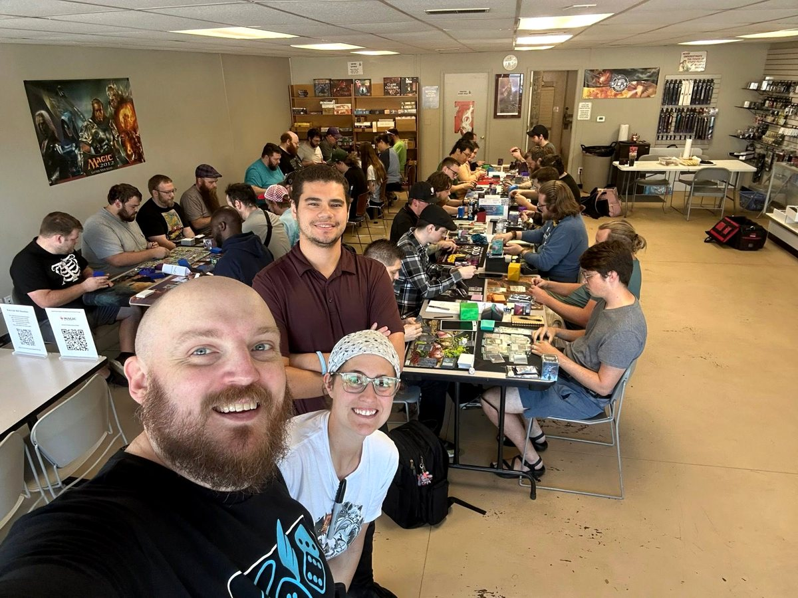
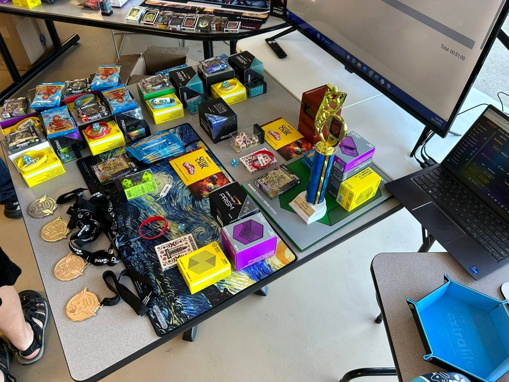
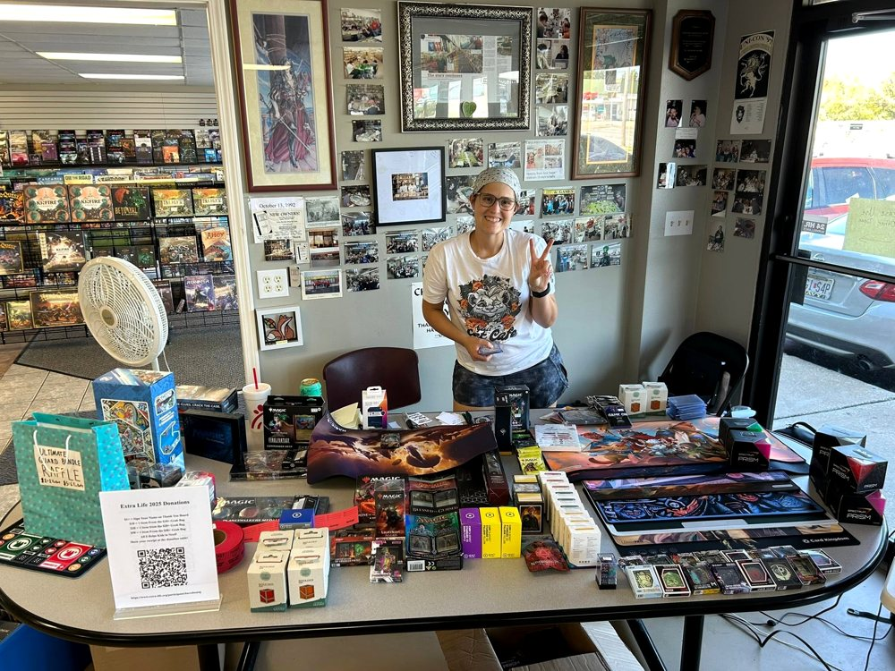
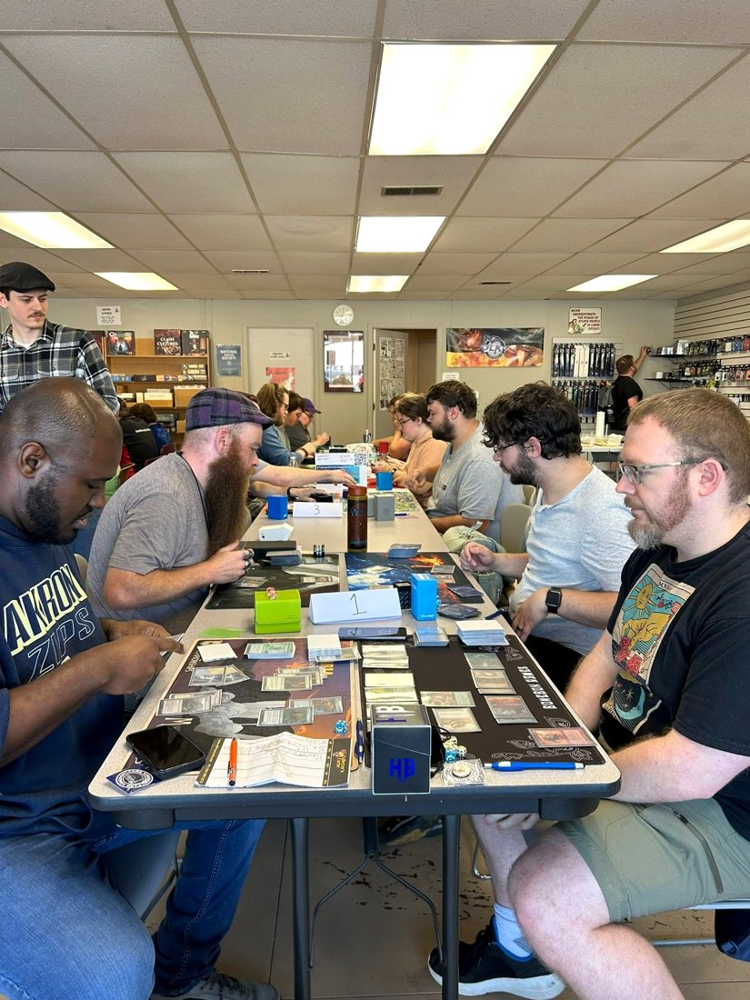
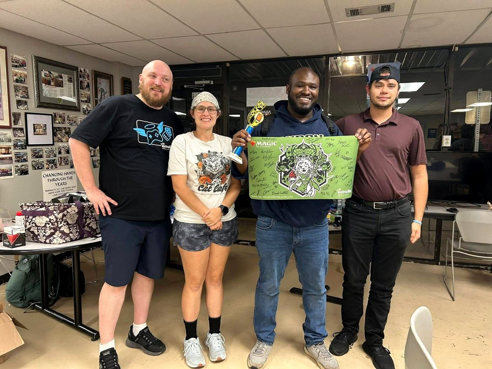

MAGIC: THE GATHERING • EXTRA LIFE • JOPLIN, MISSOURI
Play Magic.
Help Local Kids.
Bringing the Magic community together to support Children's Miracle Network through Extra Life.
2026 EXTRA LIFE PAUPER EVENT
Saturday, October 17
Gray Fox Games • Joplin, Missouri • Registration at 11 AM • Event starts at noon

100% of the entry fee goes to Children's Miracle Network through Extra Life.
Swiss rounds followed by a Top 8. Loaner decks will be available.
Prizes, donation rewards, raffles, silent auction items, and more.
COMMUNITY • GAMES • GENEROSITY
2025 Event Highlights
Thanks to everyone who played, donated, volunteered, and helped make last year's event a huge success.





ABOUT MTGFORKIDS
Games can do some good.
MTGForKids is a community fundraising project built around Magic: The Gathering events that benefit local children through Extra Life and Children's Miracle Network.
What started as a way to turn a favorite game into something positive has grown into an annual local event supported by players, stores, artists, sponsors, and friends across the Magic community.
THANK YOU
2026 Sponsors & Supporters
Thank you to the businesses, organizations, and members of the Magic community helping make this year’s Extra Life event possible.
SUPPORTING ARTISTS
Liz Danforth • Eric Deschamps • rk post • Jarel Threat • Alex Dos Diaz
GET INVOLVED
Want to support MTGForKids?
We’d love to hear from players, local businesses, game stores, artists, sponsors, and others interested in helping support our Extra Life fundraiser.
Sponsor or donate • Volunteer • Partner with us • Ask a question
CONTACT DANIEL CRABTREE dacrabsmtg@gmail.com Joplin, Missouri • Supporting Children’s Miracle Network through Extra LifePLAY GAMES. RAISE MONEY. CHANGE KIDS' HEALTH.
Same Games. A Brighter Tomorrow.
Together, we can make an even bigger impact in 2026.